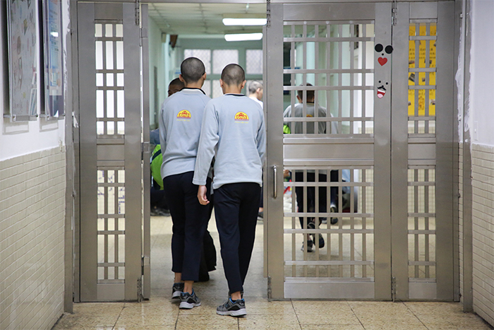
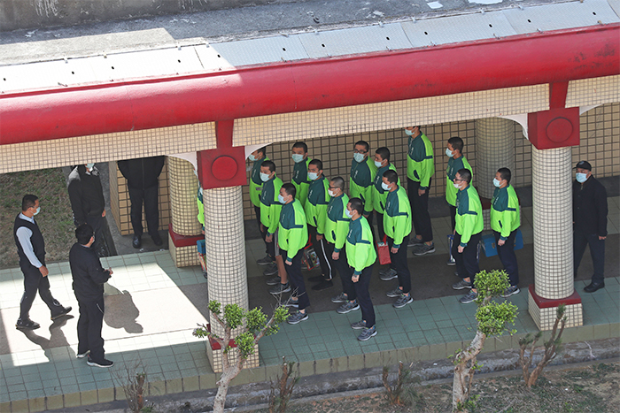
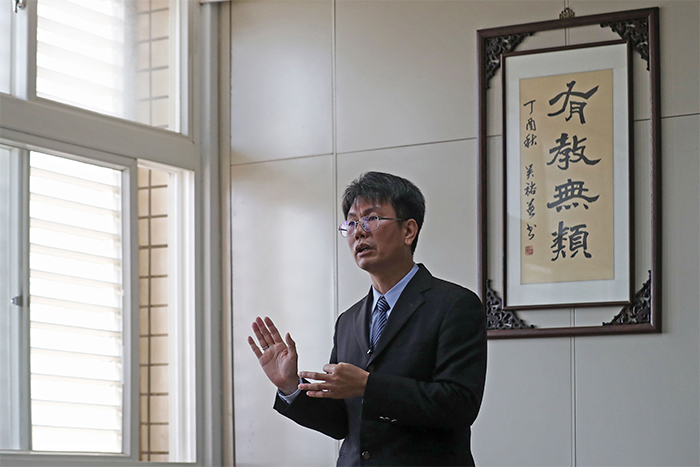

家庭失能學校避通報
吸毒破網政府無力愈補洞愈大
台灣每年近6千名青少年涉毒，毒品查緝量也逐年攀升，青少年所主要吸食的K他命，更佔緝獲量將近一半，這麼多的青少年在毒品中搖搖擺擺，問題出在哪裡？
《蘋果新聞網》追蹤吸毒少年小安（化名）三年的個案採訪中發現，當家庭失能、社會缺乏支持系統，如果政府政策又沒能真的對症下藥，就會使得問題愈發嚴重。
輔導偏差青少年近20年的張進益，自己就曾是迷途的吸毒少年，他回想過去吸毒的荒謬生活，「我當時都不知道怎麼做個正常人」，感嘆如果當初有個他相信的人，願意拉他一把，他就不會白白走了這麼多冤枉路。
張進益直言批判，這些被視為偏差的孩子，其實是沒有歸屬感，當家庭失去功能，社會又沒有強而有力的支持，「我常講，這些孩子不去吸毒，難道去做公益嗎？！」
張進益現在的輔導方式，就是努力當少年們的家人，讓他們感受被愛的溫暖，希望這群從小被否定的孩子，也能相信自己，他也成立一個「大改樂團」，讓這群被視為偏差的孩子，從音樂裡找回自我。
也輔導過許多吸毒少年，用環島、公益活動等方式協助青少年戒毒的「教官」吳豫州也指出，青少年吸毒個案，如果其家庭失去功能，學校及政府就該及早協助，等到個案吸毒成癮就來不及了，「預防勝於治療，應該早期發現、介入。」
吳豫州不諱言表示：「明明知道毒品這麼多，政府卻沒有好好面對問題。」
因為一旦學校通報學生吸毒的資料數據給教育部，教育部就視為學校辦學不力，長久下來，反而變成學校通報就有責任，「乾脆不通報就沒人吸毒」，完全本末倒置。

吸毒人數下降、查獲量卻上升 「毒品犯罪黑數大」
《蘋果》調查發現，在內政部警政署的統計，2019年青少年毒品案嫌疑犯人數為5676人；但教育部統計的學生藥物濫用通報數，2019年僅608人。
兩個政府單位這兩個相關數字，可以相差到如此之大，警大國境警察系教授柯雨瑞表示：「毒品犯罪黑數很大」，近年通報人數降低，查獲量卻增加，「不排除有犯罪人數未通報。」
政府無法真正面對問題，所提出的策略就都是掩飾、規避，吳豫州說：「為什麼青少年吸毒反反覆覆，他不是不想改變，而是社會支持力不夠。」
張進益也直批，「如果沒辦法找出真正（吸毒）的人，你怎麼去輔導他們？」這些躲在暗處的少年，第一步就被漏接。
而且，中央籠統的政策也常讓人感到無力。張進益直批，政府提出的社會安全網空有理想，偏離實務太多，缺乏專責單位統籌，資源無法集中在需要輔導的孩子身上。
「現在取個不好聽的名稱『難置兒』，大家說無法輔導就丟，從這個機構轉到另一個機構，最後誰要負責？沒有權責單位啊！」
對於吸毒少年變成人球，更生少年關懷協會主任陳彥君進一步解釋，學校害怕或沒能力處理這些吸毒學生，「選擇請他離開比較快，眼不見為淨。」
而現在政府更傾向將這些個案視為犯人而非病人，最後進入監所，「隔離起來當然碰不到毒品，但出來後才是真正挑戰的開始。」

感化教育補破網 再犯率達兩成
感化教育作為青少年犯罪的最後一道防線，新竹誠正中學校長陳宏義表示，矯正機關試圖讓這群孩子再站起來，除了增強個人的心理強度、面對挫折的容忍力，更希望讓他們找到未來目標。
「矯正教育很關鍵的是修復關係。」陳宏義解釋，當孩子被照顧、鼓勵，他才會慢慢卸下武裝，露出純真的一面，「他很多自信就會長出來，發展出比較健全的人格。」
誠正中學持續與雲門舞集合作，教導這群孩子跳舞，或是引進故宮藝術展品，甚至開設多元課程，烘焙、汽修、網頁設計等，希望讓孩子找回學習的樂趣、培養專長，「出校時他人生就有轉向的可能性」。
不過，矯正教育並非萬靈丹，只是在社會安全網層層疏漏後，試圖補破網。陳宏義便坦白說，「孩子其實穩定性沒有那麼高。」出校後不論就學或是工作，還是需要適應期，他粗估，出校再犯罪機率，一、兩內可能比較低，但長期追蹤來看，再犯率可能達兩成。
青少年吸毒如何早期預防介入才是關鍵，從家庭、學校、社會、政府都必須負起責任，少年才有可能不再被漏接。
